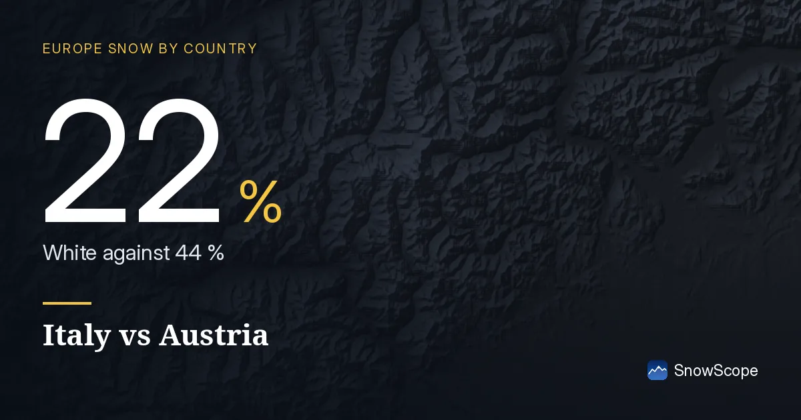
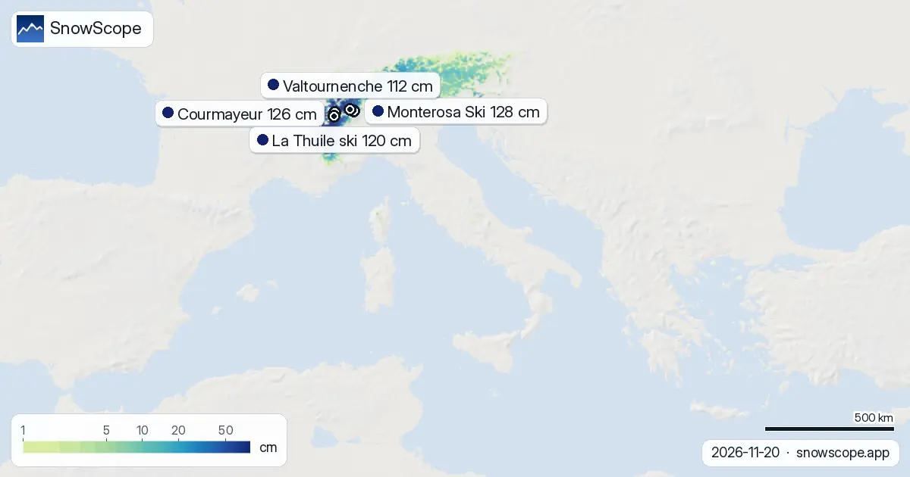

Italy vs Austria: 22 % white against 44 %
22 % of the mapped high ground is white in Italy, against 44 % in Austria. The deepest resort in Italy has 128 cm; in Austria it is Rifflsee with 120 cm.
See the live snow forecast for Monterosa Ski in the SnowScope appSnow depth, powder alerts and the 3D map, free.
Across the border
For a trip near the border this decides the direction: the snow is not where the map of borders would suggest, it is where the last storm went.
The white area in Italy stands at about 20,940 km² today, 3,530 km² less than yesterday. In other words, 22 % of the mapped high ground is white.
| Country | White | Deepest resort | Next 7 days |
|---|---|---|---|
| Italy | 22 % | Monterosa Ski | 58 cm |
| Austria | 44 % | Rifflsee | 44 cm |
| Switzerland | 64 % | Glacier 3000 | 89 cm |

The neighbours today
For comparison, the neighbours on the same day: Austria: 44 % white, deepest Rifflsee with 120 cm, up to 44 cm in the week ahead; Switzerland: 64 % white, deepest Glacier 3000 with 124 cm, up to 89 cm in the week ahead.

The resorts with the most snow
At the top of the list, Monterosa Ski reports 128 cm.
Close behind: Courmayeur (126 cm), La Thuile ski (120 cm), Valtournenche (112 cm) and Ollomont (82 cm).
At Monterosa Ski: 48 cm of fresh snow over three days, 26 cm more expected by Monday 23 November.
Courmayeur picked up 140 cm in the last three days and could add 80 cm by Monday 23 November.
Count 165 white resorts out of 237 in Italy today.
The rest of the shortlist: La Thuile ski: 120 cm on top, 130 cm in three days, 73 cm expected; Valtournenche: 112 cm on top, 65 cm in three days, 34 cm expected; Ollomont: 82 cm on top, 105 cm in three days, 55 cm expected.
What is coming
Snow is in the forecast: up to 42 cm by the end of the third day, up to 58 cm within seven days.
The snowiest day looks like Sunday 22 November, with up to 34 cm in the snowiest spots.
The second week adds up to 16 cm where it snows most.
The week in numbers
Snow cover in Italy over the last days: 16 November 21,210 km²; 17 November 17,790 km²; 18 November 19,640 km²; 19 November 24,470 km²; 20 November 20,940 km².
The deepest resort changed hands 3 times this week.
Snow depth by height
Climb and the snow gets deeper: 1,000-1,500 m: on average under 1 cm (6 % of the ground white); 1,500-2,000 m: on average 3 cm (61 % of the ground white); 2,000-2,500 m: on average 10 cm (94 % of the ground white); above 2,500 m: on average 27 cm (99 % white).
Today's snow cover
A week ago it was 21,760 km²: 820 km² has melted away since. Most of the ground is white from about 1,700 m up.
New snow in the last three days
In the last 72 hours the most new snow, up to 71 cm, fell over the Aosta Valley, the Piedmont Alps and the central Apennines.
In the past day, up to 26 cm was added.
At least 5 cm fell over some 19,540 km².
Planning a day on the snow
Above 2,000 m the ground is almost fully white (94 % covered), so runs up there have a continuous base.
Between 1,500 m and 2,000 m the cover is patchy, about 61 % white: expect grass and stones between the snow.
Below 1,500 m the slopes are still almost bare.
If you can choose the day, go after Sunday 22 November: the fresh snow then has time to settle and the roads to be cleared.
What it means on the slopes
The new snow freshens the upper slopes; lower down it may already be heavy or wet.
Keep an eye on the forecast: the coming snow could change the picture quickly.
Tips for skiers
- Fresh snow on a cold base sticks badly: take care on steep slopes.
- Early-season snow is thin over rocks: ski the groomed runs first.
- Morning snow is firm after a clear night: wait for the sun on south faces.
About these numbers
Resort snow depths are the deepest snow on the resort's upper slopes from the SnowScope snow model (about 1 km, run of 20 November); they are estimates for an area, not a measurement at one point. Station values are measurements on the date shown. Forecasts can change. Always read the official avalanche bulletin before going off-piste.
Cite this report
For research, teaching or the press: the numbers and charts are free to reuse under CC BY 4.0 with this citation.
SnowScope (2026), Italy vs Austria: 22 % white against 44 %, https://snowscope.app/blog/en/2026/11/italy-snow-vs-neighbours-20-november-2026.html, accessed 2026-11-20
SnowScope (Atlas Labs). (2026, November 20). Italy vs Austria: 22 % white against 44 %. SnowScope snow reports. https://snowscope.app/blog/en/2026/11/italy-snow-vs-neighbours-20-november-2026.html
BibTeX
@misc{snowscope2026italysnowvsneighbours20n,
author = {{SnowScope (Atlas Labs)}},
title = {Italy vs Austria: 22 % white against 44 %},
year = {2026},
month = nov,
howpublished = {\url{https://snowscope.app/blog/en/2026/11/italy-snow-vs-neighbours-20-november-2026.html}},
note = {Published 2026-11-21 11:27 UTC; accessed 2026-11-20}
}· CC BY 4.0 · Methods, data and tools →
Monterosa Ski: snow and temperature by height, this winter vs last (tools) →
Follow Monterosa Ski
Free: a message when fresh snow is coming, and the forecast every morning.
More snow reports

In 24 of 46 winters, resorts on the Italian and southern French side of the Alps had a relatively bigger winter than the northern side. The chart, the big years and the weather behind them.

Savin Kuk above Žabljak picked up 22 cm of snow from 13 to 19 November and still has 6 cm today. Kolašin 1450 and 1600 are bare. The week day by day, and the next chances.

Up to 30 cm of snow fell on northern Velebit and Bjelolasica on Friday 13 November 2026. By Tuesday it was gone. Day by day, what the mountains kept, and when snow comes back.